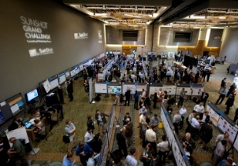

Industry workshops help the U.S. Department of Energy (DOE) Solar Energy Technologies Office obtain a wide range of stakeholder feedback to guide the SunShot Initiative. DOE held the workshops below to identify barriers and opportunities associated with the SunShot goals.
Workshop summaries and presentation content are available for the following events:
- 2017 Gen 3 CSP Systems Workshop
- 2016 Systems Integration Power Electronics Workshop
- 2016 SunShot Strategy Forum: PV Modules and Systems
- 2016 SunShot Strategy Forum: PV Codes and Standards
- 2016 Solar Forecasting Workshop
- 2015 Grid Integration of Solar Energy Workshop
- 2014 SunShot Grand Challenge Summit and Peer Review
- PVMapper: A Tool for Energy Siting Webinar
- 2013 Solar Action Webinar Series
- 2013 SunShot CSP Program Review
- DOE/CPUC High Penetration Solar Forum Webinar
- 2013 State Technical Assistance Team Webinars
- Residential PV Price Comparison Webinar
- 2013 Photovoltaic Module Reliability Workshop
- Thermochemical Energy Storage Workshop
- Best Practices in the Design of Utility Solar Programs Webinar
- 2012 State Technical Assistance Team Webinars
- 2012 SunShot Grand Challenge Summit and Technology Forum
- Ad Lucem: Modeling Market Transformation Pathways Workshop
- Plug-and-Play Workshop
- Photovoltaic (PV) Validation and Bankability Workshop
- PV Manufacturing Workshop
2017 Gen 3 CSP Systems Workshop
February 1-2, 2017
Sacramento, CA
This workshop was held to present a R&D Roadmap and technology development pathways of a new generation of high-temperature concentrating solar power (CSP) technology. The SunShot Initiative team sought to solicit feedback from a diverse audience of researchers, component manufacturers, and system integrators to help guide future funding direction. Download the presentations.
2016 Systems Integration Power Electronics Workshop
October 11-12, 2016
Golden, CO
This workshop was held to identify critical challenges and opportunities associated with integrating high levels of solar energy into the electric grid, specifically in the advanced power electronic area. Download the white paper, agenda, and presentations.
2016 SunShot Strategy Forum: PV Modules and Systems
September 16, 2016
Las Vegas, NV
This workshop brought together academic and industry stakeholders to discuss key areas for future research and development within photovoltaics. Participants discussed current and future technology barriers and development opportunities in order to inform future funding directions. Download a summary of the workshop.
2016 SunShot Strategy Forum: PV Codes and Standards
September 16, 2016
Las Vegas, NV
This event featured breakout sessions dedicated to defining key areas for future attention within the photovoltaic (PV) codes and standards space. Participants discussed current and future priorities in order to inform future funding directions. Download the presentations.
2016 Solar Forecasting Workshop
This workshop identified the technical challenges and opportunities in solar forecasting as a capability that can significantly reduce the integration cost of high levels of solar energy into the electricity grid. Download the presentations and white paper.
2015 Grid Integration of Solar Energy Workshop
October 29, 2015
This workshop identified critical challenges and opportunities associated with integrating hundreds of gigawatts of solar energy into the electric grid, assessed state of the art technologies, and proposed a set of solutions that will address near- and long-term research and development needs. Download notes and presentations.
SunShot Grand Challenge Summit and Peer Review 2014
May 19-22, 2014
Anaheim, CA
Building on the successes of first Grand Challenge Summit in 2012, this premier gathering brought together more than 800 members of the solar community to review the progress made toward the SunShot goal and discuss the challenges ahead to make solar energy more affordable and widespread across America. Download the presentations.
PVMapper: A Tool for Energy Siting
September 17, 2013
This webinar introduced solar developers, environmental consulting firms, data companies, and software developers to a new open-source GIS siting tool. Developed by the Center for Advanced Energy Studies' Energy Policy Institute with support from the SunShot Initiative, the PVMapper project is designed to allow utility-scale solar developers to compare multiple potential sites with a focus on reducing balance of system (BOS) soft costs. These soft costs include variables such as proximity to power infrastructure, endangered species habitat, and potential social implications. This introduction will provide an advanced look at the software, which is currently in beta testing with a target launch date of June 2014.
Below are materials associated with the webinar.
- PVMapper: A Tool for Energy Siting Dave Koehler (Boise State University), Randy Lee (INL), and Scott Brown (BYU)
- An audio recording of the webinar is available.
- A transcript of the webinar is available.
2013 Solar Action Webinar Series
The SunShot Initiative and the Solar Outreach Partnership hosted five webinars as part of the Solar Action Webinar Series: Successes from the Rooftop Solar Challenge. Topics such as financing, zoning, net metering, interconnection, and inspection are covered in this series featuring best practices developed by Rooftop Solar Challenge I teams from across the country.
2013 SunShot CSP Program Review
April 23–25, 2013
The SunShot Concentrating Solar Power (CSP) Program Review 2013, held near Phoenix, Arizona, featured presentations from awardees on the forefront of CSP technologies that are currently or recently funded by the SunShot Initiative.
DOE/CPUC High Penetration Solar Forum Webinar
May 15, 2013
This webinar provided information on the results of the second High Penetration Solar Forum that convened in February, including an overview of DOE's and CPUC's grid integration awards as well as future efforts.
Below are materials associated with the webinar.
- Results from the DOE-CPUC High Penetration Solar Forum, Kevin Lynn (DOE), Melicia Charles (CPUC), and Ann Peterson (Itron)
- An audio recording of the webinar is available.
2013 State Technical Assistance Team Webinars
May 1, 2013
The popular Solar Technical Assistance Team webinars provide an overview of solar technologies, resources, and the role that state and local governments play in supporting the development of those resources. The 2013 series includes webinars on virtual net metering and community solar, among other topics.
Residential PV Price Comparison Webinar
February 28, 2013
The U.S. Department of Energy (DOE) SunShot Initiative, in conjunction with the Lawrence Berkeley National Laboratory (LBNL), discusses the installed price of residential photovoltaics (PV) being significantly lower in Germany than in the United States. In order to better characterize the nature of these differences, LBNL surveyed German PV installers using a survey on residential PV soft costs that the National Renewable Energy Laboratory (NREL) previously fielded to U.S. solar installers. This webinar presents a comparative analysis of these surveys and a broader discussion of underlying drivers for soft cost differences between the United States and Germany, with a focus on customer-owned residential solar energy systems.
Below are materials associated with the webinar.
- An audio recording of the webinar is available.
- A transcript of the webinar is available.
2013 Photovoltaic Module Reliability Workshop
February 26–27, 2013
The Photovoltaic (PV) Module Reliability Workshop was held in Golden, Colorado. The objective was to share information to improve PV module reliability because such improvements reduce the cost of solar electricity and give investors confidence in the technology.
Thermochemical Energy Storage Workshop
January 8, 2013
The concentrating solar power (CSP) program of the SunShot Initiative hosted a workshop on thermochemical energy storage for CSP in Washington, D.C. A distinguishing feature of CSP compared to other renewable technologies is its ability to include thermal energy storage at the point of power generation to handle the intermittencies of solar availability. A thermochemical energy storage system captures solar energy in chemical bonds. These systems offer the potential to achieve much higher specific energy of storage compared to current sensible and latent heat storage options. Thermochemical energy storage, therefore, represents a significant potential for being a cost-effective storage option for CSP, which will help accomplish SunShot goals.
The goal of the workshop was to identify scientific, economic, and engineering challenges and opportunities in developing thermochemical energy storage systems for CSP. To this end, the workshop convened experts from around the world in the areas of high temperature processes, catalyst development, reactor design, chemical and mechanical engineering, and material science; these participants came from academia, industry and national laboratories.
- Solar Thermochemical Energy Storage; Lessons from 40 Years of Investigation in Australia, Keith Lovegrove (IT Power Group)
- Thermochemical Energy Storage: Overview on German, and European R&D Programs and the work carried out at the German Aerospace Center DLR, Christian Sattler (German Aerospace Center DLR)
- Lessons Learned: Developing Thermochemical Cycles for Solar Heat Storage Applications, Bunsen Wong (General Atomics)
Best Practices in the Design of Utility Solar Programs Webinar
September 27, 2012
This webinar brought together representatives from industry, utilities, and regulatory authorities to share lessons learned from designing and implementing solar energy incentive programs. The discussion featured topics ranging from responding to changing solar costs, implementing consumer protection measures, incentivizing optimal system performance, emerging third-party ownership models, and stimulating various market segments.
Below are materials associated with the webinar.
- Welcome and Background, Lori Bird and Andy Reger (National Renewable Energy Laboratory)
- Overview of the CPUC's California Solar Initiative and DG Programs, James Loewen (California Public Utilities Commission)
- Designing Auction-Based PV Incentives, Eran Mahrer (Solar Electric Power Association)
- Residential Solar Valuation Rates, Karl Rabago (Rabago Energy)
- Solar PV Incentive Programs, Frank Mace and Dana Levy (New York State Energy Research and Development Authority)
State Technical Assistance Team 2012 Webinars
July 18-September 11, 2012
This webinar series was developed for state policymakers and staff.
2012 SunShot Grand Challenge Summit and Technology Forum
June 13-14, 2012
Denver, Colorado
The Summit and Technology Forum was the first event in a series of Department of Energy Grand Challenges. This event focused on SunShot Initiative goals of achieving grid-parity solar energy by 2020.
Ad Lucem: Modeling Market Transformation Pathways Workshop
February 17, 2012
Berkeley, California
This SunShot workshop focused on the development, analysis, modeling, and implementation of pathways that could enable solar energy technologies to diffuse at an accelerated rate. A diverse set of researchers and technical experts from academia, industry, government, and national labs provided insight into market dynamics and market transformation pathways.
Below are materials associated with the workshop.
- Ad Lucem White Paper
- Attendee List
- Workshop Agenda
- Welcome Presentation, Aimee Bailey (AAAS Science and Technology Fellow) and Adam Cohen (SunShot Fellow)
- Modeling Solar Technology Market Dynamic breakout session presentation and notes, Adam Cohen (SunShot Fellow)
- Modeling Solar Energy Technology Evolution breakout session presentation and notes, Aimee Bailey (AAAS Science and Technology Fellow)
- Modeling Customer Behavior breakout session presentation and notes, Christina Nichols (ManTech, International)
Plug-and-Play Workshop
October 27, 2011
Washington, D.C.
The purpose of the DOE workshop was to identify the current barriers and possible solutions for the development of plug-and-play solar technologies in the residential sector. Over 60 people attended the conference, including representatives from utilities, code officials, inverter companies, PV module companies, and installers. Results from the workshop are available.
Photovoltaic (PV) Validation and Bankability Workshop
August 31, 2011
San Jose, Calif.
DOE's Solar Energy Technologies Program hosted a workshop to discuss a planned regional test center program as part of the SunShot Initiative. During the workshop, more than 60 solar industry leaders provided input on ways for the Solar Program to support the needs of the stakeholder community and encourage private financing to fund U.S. PV industry growth.
Below are the presentations given at the workshop. The following documents are available as Adobe Acrobat PDFs.
- PV Validation and Bankability Workshop, DOE Solar Program
- DOE's Efforts to Address the Communities' Needs for Validation, Kevin Lynn, DOE Solar Program
- The Need for Validation from Concept to a Terawatt, David Williams, CleanPath Ventures
- Validation Information for PV Power System Project Review, Jeff Newmiller, BEW Engineering, Inc.
- Overcoming the Barriers to Achieving Large-Scale Production, Scott Burroughs, Semprius
- PV Validation and Bankability Workshop Survey Results
PV Manufacturing Workshop
March 25, 2011
Berkeley, Calif.
Lawrence Berkeley National Laboratory hosted a SunShot workshop focused on ways to scale up domestic manufacturing of solar energy technologies. Industry partners attending the workshop discussed how government incentives and private investment can continue to stimulate photovoltaic (PV) manufacturing capabilities through corporate partnerships.
Below are the presentations given at the workshop. The following documents are available as Adobe Acrobat PDFs.
- A Financial Perspective, Todd Glass, Wilson Sonsini Goodrich & Rosati
- Solexant Partnership, Solexant
- PV Performance and Reliability Validation Capabilities, Jennifer E. Granata, Sandia National Laboratories
- 1366 Partnership, 1366 Technologies
- Oregon's Solar Advantage, Bruce Laird, Oregon Business Development Department